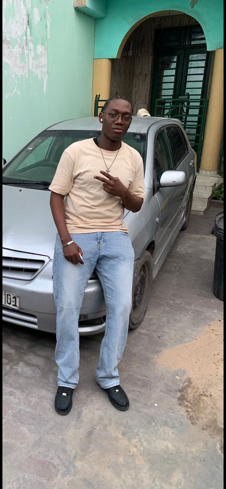

Développeur Web | Étudiant en Sciences Informatiques (FASI, LMD)

Je suis Kawata Imbel Benjus, développeur web et étudiant en sciences informatiques. Né le 15 juillet, je suis une personne calme et motivée, passionnée par la programmation et les sciences. Mon objectif principal est de réaliser des projets utiles, comme mon site de quiz éducatif qui aide les élèves à apprendre en s’amusant.